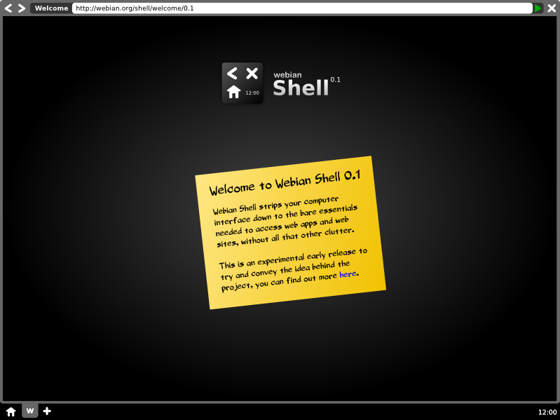

Webian Shell
A full sreen web browser for devices that don't need a desktop.
If you find most of the stuff you do on your PC these days happens in a web browser then you might find that the desktop environment you used to depend on is now just getting in your way.
The idea of the Webian Shell project is to re-think your computer's interface as something much simpler which treats web applications as first class citizens and does away with all the un-necessary clutter
The Best of Both Worlds
Shell takes the essential elements of your web browser, desktop environment and window manager and combines them into a single minimalist graphical shell dedicated to using web applications
Standing on the Shoulders of Giants
Shell is built on Mozilla Chromeless, some of the latest technology from the people who make Firefox. Chromeless allows Shell itself to be written in standard web technologies like HTML, CSS & JavaScript - giving you a pure web experience
Open by Design
Shell is completely open source and is built on open source technologies and open standards.
Webian Needs You!
Because Shell is open source, it relies on its community to move forward. There are many ways you can contribute.